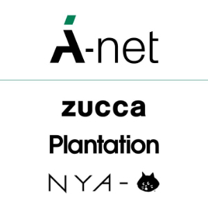

A-Net's Affiliates
A Net, the fashion parent company, is owned by and affiliated with Issey Miyake. A-Net has four active brands at the moment. These brands are the following:
- CABANE de ZUCCa
- Plantation
- tac:tac
- NYA-

The Different Brands
ZUCCa creates casual everyday clothing, and was created in 1988. Plantation is a women's line which focuses on comfort and quality materials that feel good to wear. Tac:tac, created by Takaaki Shimase, is no longer owned by A-Net, but is still in production. It's garments focus on historical Japanese themes. NYA- is a brand that focuses on the legacy of Ne-Net by using it's cute cat mascot, Nya.
A-Net Brands PageDiscontinued A-Net Brands
- Tsumori Chisato
- Né-net
- Mercibeaucoup,
- Sunaokuwahara
- Merrem